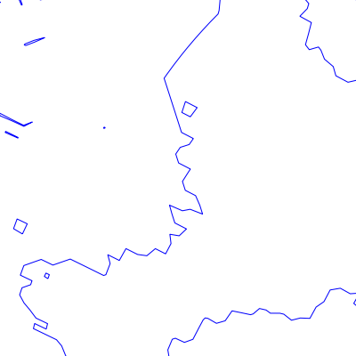
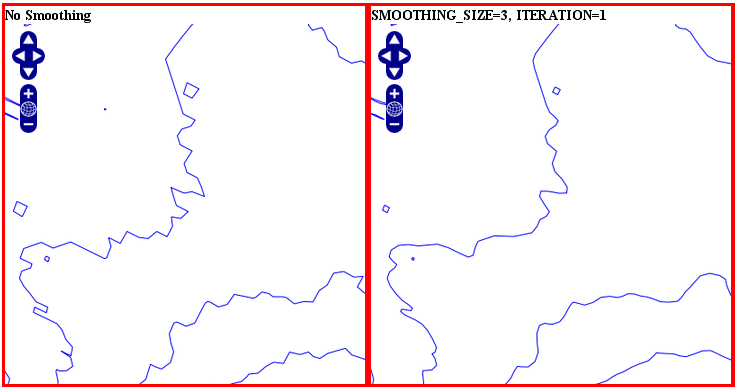
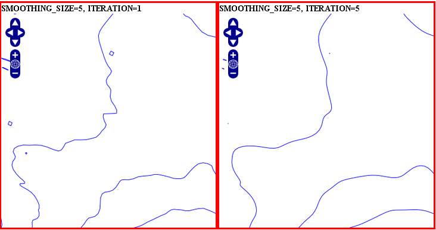
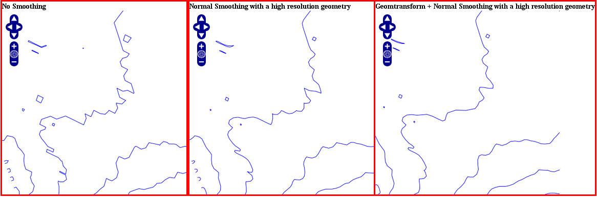
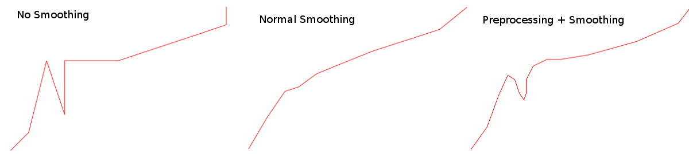
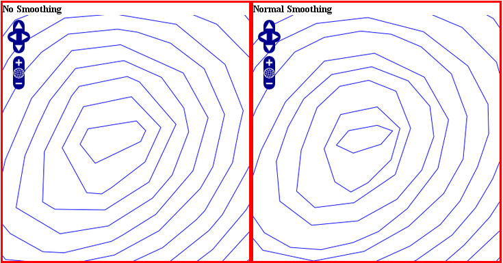
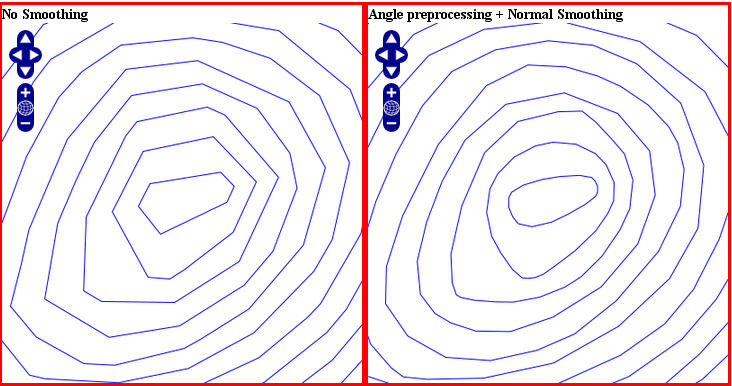

MS RFC 94: Shape Smoothing¶
- Date:
2013/03/26
- Author:
Alan Boudreault
- Contact:
aboudreault at mapgears.com
- Author:
Daniel Morissette
- Contact:
dmorissette at mapgears.com
- Status:
Adopted and Implemented
- Version:
MapServer 6.4
1. Overview¶
This is a proposal to add the ability to smooth shapes of a vector layer in MapServer.
Currently, there is no way to smooth a shape and they are rendered as they are in the dataset. However, it would be useful to smooth the shape for a better rendering result. Here’s an example of a bad rendering (from a contour layer):

2. The proposed solution¶
This RFC proposes the addition of shape smoothing in MapServer. The initial solution will implement the SIA algorithm: Smoothing via Iterative Averaging. To find out more about the SIA technique, see http://www.ijcee.org/papers/501-P063.pdf. More algorithms could be implement in the future. Smoothing is simply a new geomtransform function available at the layer and style levels.
To enable the smoothing for a layer with the default settings, we only need to set the geomtransform:
GEOMTRANSFORM (smoothsia([shape]))
Smoothing settings:
smoothing_size: The window size (number of points) used by the algorithm. The default is 3.
smoothing_iteration: The number of iterations of the algorithm. The default is 1.
preprocessing: Optional preprocessing method to add more vertices to the shape prior to smoothing, described below.
You can pass those optional parameters using the following geomtransform:
GEOMTRANSFORM (smoothsia([shape], [smoothing_size], [smoothing_iteration], [preprocessing]))
Example of a simple layer definition:
LAYER NAME "my_layer"
TYPE LINE
STATUS DEFAULT
DATA roads.shp
GEOMTRANSFORM (smoothsia([shape], 3, 1))
CLASS
STYLE
WIDTH 2
COLOR 255 0 0
END
END
3. Examples¶
Here are some examples showing results with different parameter values.


4. Smoothing result factors¶
Since the smoothing algorithm is performed on a window of x vertices (3 by default), there are some factors that might affect the result.
4.1 Dataset resolution is too high¶
If you are trying to smooth a line that has a very high resolution (high density of vertices at the current view scale), you may not get the expected result because the vertices are too dense for the smoothing window size. In this case you might want to simplify the shapes before the smoothing. You can combine smoothing and simplification in a single geomtransform for that.
GEOMTRANSFORM (smoothsia(simplifypt([shape], 10)))
See RFC 89: Layer Geomtransform for more info. Here’s a visualization of the issue:

4.2 Dataset resolution is too low¶
If you are trying to smooth a long line that has a low density of vertices, you may not get the expected result in some situations where you may lose some important parts of the shape during the smoothing, for instance around acute angles. You can improve the result by enabling a pre-processing step to add intermediate vertices along the line prior to smoothing.
This behavior is controlled using the “all” value in the preprocessing argument of the smoothsia() geomtransform:
GEOMTRANSFORM (smoothsia([shape], [smoothing_size], [smoothing_iteration], ‘all’))
This preprocessing will be performed before the smoothing. It adds 2 intermediate vertices on each side of each original vertex. This is useful if we really need to preserve the general shape of the shape with low res data. Note that this might have an impact on the rendering since there are more vertices in the output.
Here’s a visualization of the issue:

4.3 Curves¶
The preprocessing step might not be appropriate for all cases since it can impact a lot the smoothing result (maybe too much?). However, without it, you might notice some bad smoothing with big curves. See this example:

You can improve that by enabling another type of preprocessing: angle. This one will add points at some specific places based on angle detection to recognize the curves. Here’s how you can enable it:
GEOMTRANSFORM (smoothsia([shape], [smoothing_size], [smoothing_iteration], ‘angle’))

5. Files affected¶
The following files will be modified/created by this RFC:
mapserver.h
mapsmoothing.c (implementation of the smoothing code)
maplayer.c
mapparser.y (add additional geomtransform)
6. MapScript¶
No issue for any MapScript bindings. The smoothing is handled/rendered internally as a geomtransform.
7. Backwards Compatibility Issues¶
This change provides a new functionality with no backwards compatibility issues being considered.
8. Tests¶
msautotest will be modified to add some tests related to that new geomtransform.
9. Performance¶
I did a quick performance test: it consists of a line layer (shapefile) that draws an 1200x1200 image with 2400 shapes. The number is the layer draw times.
No Smoothing: 0.224s
Smoothing (size: 3, iteration: 1): 0.230s
Smoothing (size: 5, iteration: 1): 0.225s
Smoothing (size: 3, iteration: 3): 0.240s
Smoothing (size: 3, iteration: 1 + preprocessing: all): 0.368s
Smoothing (size: 3, iteration: 1 + preprocessing: angle): 0.280s
10. Voting history¶
+1 from Tom, Perry, Stephen, Tamas, Stephan, Daniel, Jeff and Michael.